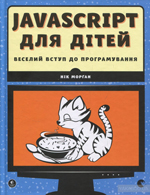
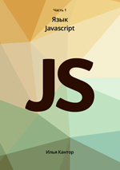
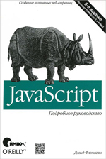
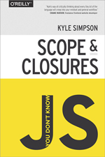
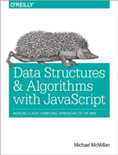

5 найкращих книг для вивчення JavaScript від Senior Front-end розробника Олександра Головатого
Нік Морган «JavaScript для дітей. Веселий вступ до програмування»
Незважаючи на дитячу назву, книга досить технічно сильна і читати її буде не нудно навіть досвідченим JS програмістам. Я дуже люблю вивчати мови програмування на прикладах розробки найпростіших казуальних ігор. Напевно, тому книга потрапила до п'ятірки найкращих для вивчення JavaScript. У ній, крім класичного вивчення основ програмування з масивів, циклів, управління елементів на веб-сторінці, ви також зустрінете приклади розробки онлайн-ігор «Пошук скарбів», «Шибеницю» та «Змійку». Думаю, книга буде ідеальним стартом. Що може бути цікавіше та веселіше, ніж захоплююча розробка ігор з безліччю барвистих картинок та послідовних прикладів коду.
Ілля Кантор «Сучасний підручник JavaScript»
Підручник написаний справжнім гуру за JS Іллею Кантором, автором знаменитого російськомовного онлайн-ресурсу з вивчення JavaScript - javascript . ru, знайомого кожному веб-розробнику. Ця тритомна праця гідна похвали, дуже деталізований опис усіх тонкощів та особливостей сучасного JavaScript. Крім стандартного вивчення основ, структур даних, замикання, об'єктів, ООП в JS, ви також вивчите більш просунуті теми: ітератори, проміси, генератори, модулі, події, створення графічних компонентів, регулярні висловлювання, анімацію, AJAX, оптимізацію та багато іншого. Підручник складається з трьох томів: Мова JavaScript, Документ, події, інтерфейси, Тематичні розділи. Книга читається легше, ніж ще одна класична праця - JavaScript. Детальний посібник» Девіда Фленанагана, який по праву також входить до нашої п'ятірки.
Фленаган Девід JavaScript. "Детальний посібник"
Ця книга для мене є найбільшим довідником з JS. Вперше вона читається трохи складно. Але через деякий час книгу потрібно знову прочитати для глибшого розуміння матеріалу. У світі JavaScript, гадаю, вона вже давно стала священним «Граалем», обов'язковим для вивчення. Ви можете вивчити крім базового JavaScript, також роботу з документами, об'єктом Window, обробкою подій, з протоколом HTTP, бібліотекою jQuery, вивчити роботу з графікою та медіафайлами та як зберігати дані на стороні клієнта, а також роботу з прикладними інтерфейсами HTML5. Особисто для мене дві вищезгадані книги є найкращими та повними підручниками з JavaScript.
Кайл Сімпсон "Ви не знаєте JS"
Кайл Сімпсон є Open Web євангеліст з Остіна, штат Техас, який захоплений усім, що пов'язано з JavaScript. Він автор, тренер семінарів, технічний спікер на численних конференціях. Насправді це ціла серія невеликих книг JavaScript. Так як кожна книга розкриває лише невелику частину матеріалу, я розглядаю їх як одне джерело і як одну книгу, розбиту на глави. Ось список: "Up & Going", "Scope & Closures", "this & Object Prototypes", "Types & Grammar", "Async & Performance", "ES6 & Beyond". Ця серія підручників ідеально підходить для більш глибокого вивчення та розуміння найскладніших частин JavaScript. Особливо варто виділити "Scope & Closures", "this & Object Prototypes", "Async & Performance". Вся серія книг чудово доповнює вивчення JS після трьох вищенаведених підручників.В оригіналі — Kyle Simpson You Don't Know Js
Онлайн-версія книги англійською доступна на GitHub
Майкл Макміллан «Структури даних і алгоритми з JavaScript»
На вибір п'ятої книги у мене були труднощі та сумніви. Так багато різних відмінних книг зараз написано по JS. Остаточний вибір було визначено одним із найважливіших моментів щодо будь-якої мови програмування — алгоритми і структури даних. Питання з цих тем на співбесідах вже давно стали обов'язковими незалежно від технічного рівня кандидата, молодшого чи старшого розробника. Ця книга детально та з великою кількістю прикладів коду розкриває основні структури даних та приклади їх використання. Вона гідно замикає п'ятірку найкращих книг із вивчення JavaScript.